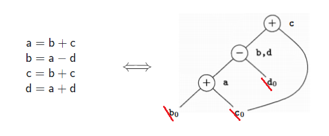
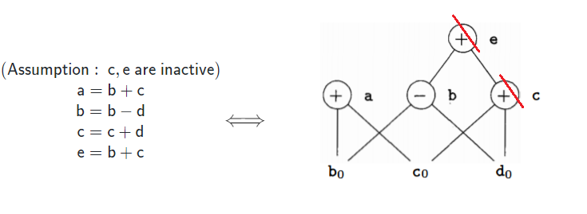
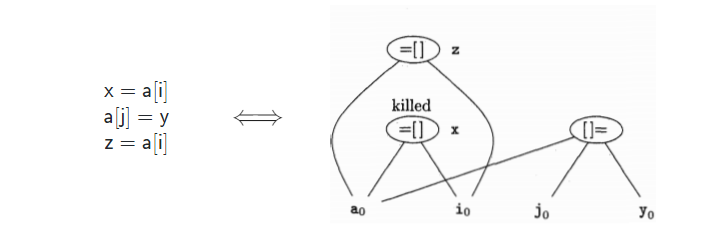

1. local optimizations
1. 基本块和流图
(1). 基本块
基本块 (
- 确定首指令 (
leaders ): - 指令序列的第一条指令；
- 任意一个条件或无条件转移指令的目标指令；
- 紧跟在一个条件或无条件转移指令之后的指令；
- 每个首指令对应的基本块包括 [本条首指令, 下一条首指令) 范围内的序列
(2). 流图
流图 (
- 存在一个从 $\small B$ 的结尾跳转到 $\small C$ 的开头的跳转或无条件跳转语句
- $\small C$ 在指令序列中紧跟在 $\small B$ 后面，且 $\small B$ 的结尾不存在无条件跳转语句
2. 局部优化
(1). 基本块的 DAG 表示
- 每个变量都有一个结点，表示其初值 (常用脚标 $\small 0$ 标识)
- 每条形如 $\small a\ \mathrm{op}\ b$ 的语句都有一个结点 $\small N$，并用语句的运算符作为 $\small N$ 的标识符
- $\small N$ 维护一个定值变量表，保存此语句定值的变量
- $\small N$ 的子结点是语句或变量初值的结点，表示运算分量的最晚定值
- 为语句 $\small x=a\ \mathrm{op}\ b$ 构造结点 $\small N$ 的时候，需要删除 (
kill ) $\small x$ 的上一次定值 (如果有)
(2). 寻找局部公共子表达式
为一条语句构造结点 $\small N$ 时，如果 $\small N$ 在
e.g.

结点 $\small\mathsf{b,d}$ 即代表局部公共子表达式。如果 $\small\mathsf{b}$ 在基本块的出口是inactive 的，就可以删除 $\small\mathsf{b}$ 及其代表的式子，只保留 $\small\mathsf{d}$，得到优化结果: $\small\mathsf{a=b+c;\ d=a-d;\ c=d+c;}$；若 $\small\mathsf{b,d}$ 都是活跃的，则二者都需保留，并通过复制语句消除公共子表达式。
(3). 删除无用代码
- 活跃变量: 以后可能被使用
- 根结点: 没有父结点的结点
e.g.

因此删除结点 $\sf e$ 和 $\sf c$，因此，第3 和 第4 条语句被删除
(4). 数组的引用和赋值
数组访问的
- 形如 $\sf x=a[i]$ 的数组引用: 结点由 =[] 标识，子结点为 $\sf a$ 和 $\sf i$
- 形如 $\sf a[j]=y$ 的数组赋值: 结点由 []= 标识，子结点为 $\sf a$、$\sf j$ 和 $\sf y$
- 该结点没有定值变量表
- 该结点的创建将杀死其他所有已建立的、值依赖于 $\sf a$ 的结点，使其无法获得定值变量
e.g.

由于 $\sf a[j]$ 可能修改了 $\sf a[i]$， $\sf a[i]$ 不应被误判为公共子表达式。
(5). 基本块的重组
通过以上方法完成对
- 指令的顺序依照
DAG 的顺序 (自底向上) - 数组的赋值和引用注意参考原序列的相对顺序
- 为含有多个定值变量的语句生成代码:
- 若含有多个活跃变量，需要引入复制语句，为每个活跃变量生成语句
- 若没有活跃变量，则随便为定值表中的某一个生成语句